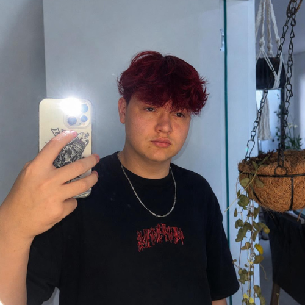
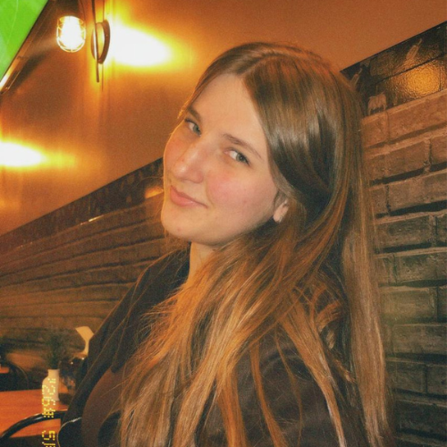
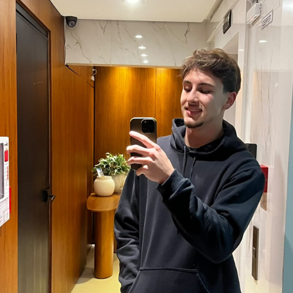

⌂
Organização da casa
Organize informações e acompanhe a rotina da família em um só lugar.
Conheça o Ninho: uma forma mais leve, organizada e colaborativa de cuidar da rotina familiar.
Conheça nosso projeto ↓Mais do que uma ferramenta, um espaço para compartilhar responsabilidades e cuidar de quem amamos todos os dias.
O Ninho é uma site desenvolvido para ajudar as famílias a organizarem suas rotinas de maneira simples e compartilhada com todos os integrantes.
Através dele, os membros de uma família podem acompanhar tarefas, organizar refeições, controlar alimentos da geladeira, planejar compras e visualizar compromissos.
Tudo isso em um ambiente pensado para ser acessível, fácil para todos os integrantes, intuitivo e acolhedor, aproximando as pessoas através da colaboração no dia a dia.
Funcionalidades que tornam a rotina da casa mais prática.
Organize informações e acompanhe a rotina da família em um só lugar.
Distribua tarefinhas e acompanhe o que precisa ser feito.
Organize alimentos, acompanhe receitas e facilite o planejamento das refeições.
Planeje compras, compromissos e acontecimentos importantes da família.
Conheça algumas das tecnologias utilizadas na construção do nosso projeto.
Para desenvolver o Ninho, utilizamos tecnologias que permitem criar um site interativo, funcional, organizado e acessível em diferentes dispositivos.
Cada ferramenta possui uma função importante na construção e no funcionamento do Ninho.
Estruturação e organização das páginas.
Estilização, cores e identidade visual.
Interatividade e funcionamento das funcionalidades.
Banco de dados utilizado, autenticação e armazenamento online.
O Ninho nasceu da ideia de tornar a organização familiar mais simples e aproximar os familiares através da colaboração.
Queremos mostrar que a tecnologia pode ir além das telas: ela também pode ajudar a construir momentos, fortalecer os vínculos e transformar pequenas tarefas em experiências compartilhadas.
Nosso objetivo é oferecer um espaço onde cada pessoa possa contribuir, participar e sentir que faz parte de algo maior do que o amor de uma família.
Três estudantes trabalharam juntos nisso, conheça-os!

"Sou Arthur Werlang Ceschini, tenho 17 anos, estou
no 2º ano do Ensino Médio e sou vice-líder da nossa
turma aqui do SENAI. No projeto Ninho, busquei
contribuir com dedicação, criatividade e vontade de
aprender, transformando todos os nossos conhecimentos
em algo útil e significativo. Acredito que a tecnologia
vai muito além de códigos: ela é uma forma de criar
soluções e melhorar vidas. E acredito que, como disse
Bill Gates: "A tecnologia é apenas uma ferramenta. O que
importa é o que fazemos com ela."
- Arthur W. Ceschini, 2026

"Oii! Me chamo Luiza Triches Knop, sou estudante do 2º ano do
Ensino Médio, tenho 16 anos, faço o Curso Técnico em Desenvolvimento
De Sistemas aqui no SENAI pela parte da noite, sou representante
da nossa turma e sou apaixonada por tecnologia. Desde criança eu
sempre me envolvi muito com videogames e computadores, oque me
motiva cada vez mais a seguir nessa área. Amo de paixão oque faço
todas as noites aqui, e sempre estou pronta para aprender cada vez
mais. No nosso projeto, contribui com a maior parte da programação
em JavaScript, e também com a parte de design do site. Espero
de coração que vocês tenham gostado do nosso projeto. Agradeço a
todos que nos motivaram todos os dias, agradeço aos meus pais, ao
nosso professor Alisson e a toda a equipe do SENAI que nos ajudou
a chegar até aqui. Muito obrigada de coração!"
- Luiza T. Knop, 2026

"Meu nome é Cauan Dona Brusco, tenho 17 anos e estou
no segundo ano do ensino médio. Sou aleta de voleibol
e jogo no time do meu município, Pinhalzinho. Estudo
no SENAI desde o início do ano e tive como incentivo
para as ideias a criação do nosso site pensando na
convivência familiar e nas tarefas domésticas,
tenho como objetivo seguir em uma carreira profissional
e trabalhar com a tecnologia."
- Cauan D. Brusco, 2026
Obrigada por conhecer a nossa história.
Voltar ao início ↑